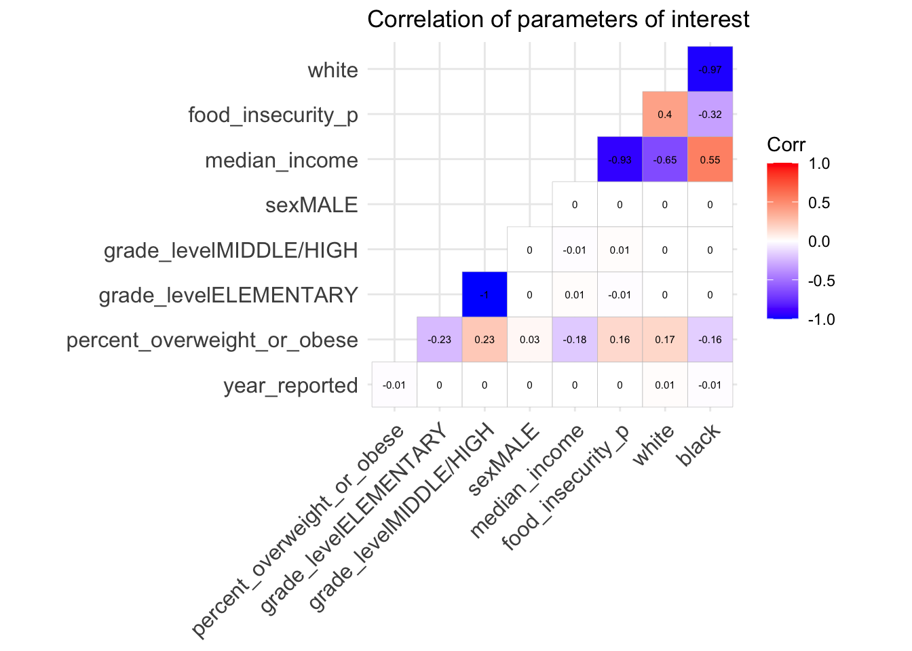
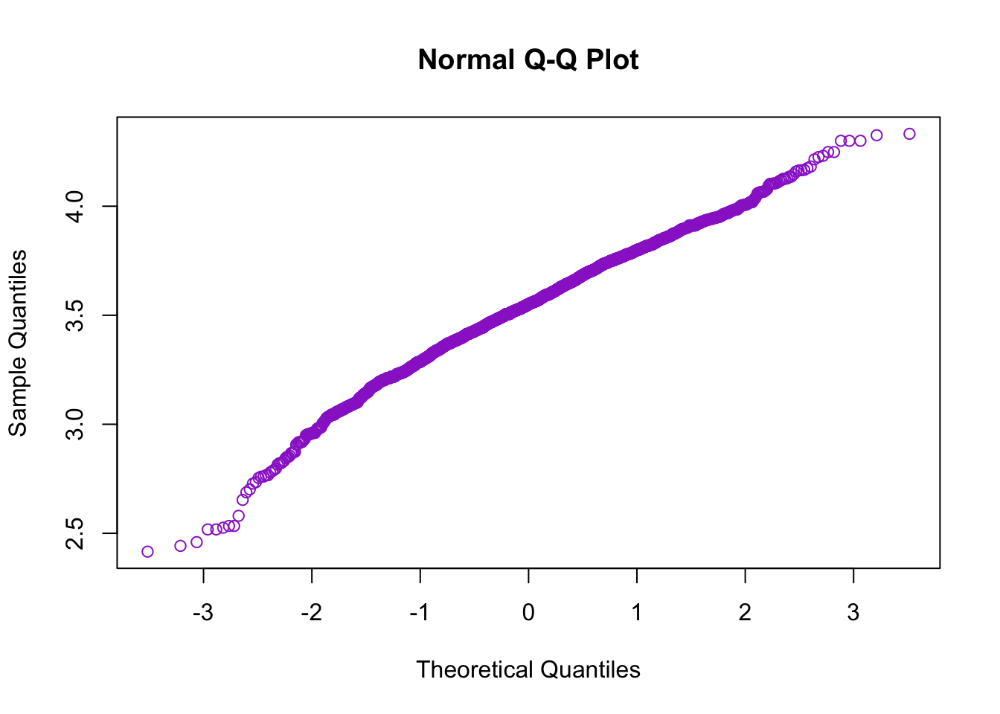
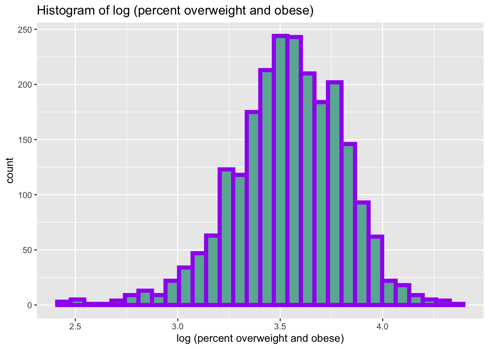
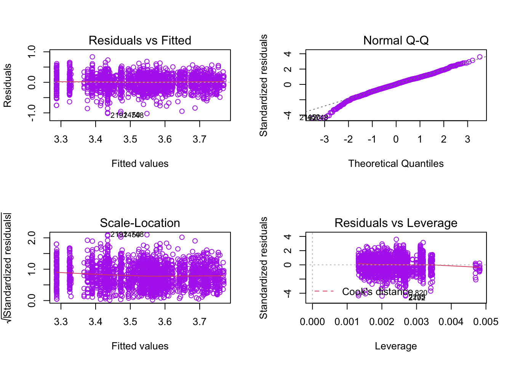

Childhood obesity is a major concern in the United States. In nowadays, obesity is putting children and adolescents at risk for poor health. Obesity prevalence among children and adolescents is very high. According to the CDC website, obesity prevalence was 13.9% among 2- to 5-year-old, 18.4% among 6- to 11-year-old, and 20.6% among 12- to 19-year-old.
The harms of obesity in adolescents exhibit in both physical and psychological aspects. The expression of obesity in children and adolescents is often indicated by weight gain and having a large amount of fat deposition. The increase in body fat will result in increases in body burden and oxygen consumption, which explains why obese children consume more oxygen than people who maintain a healthy weight. Obesity also causes them to be heavy, slow, and unable to move. Many children and adolescents often have flat feet, knee flexion, lower limb flexion, spine, and intervertebral cartilage damage due to obesity. Obese children and adolescents with high cholesterol levels are also at the risk of having a compromised immune system. Some study also shows that obesity is a risk factor of depression.
Therefore, we conducted this study on the obesity situation of students in elementary and middle/high school from 2010 to 2019 to investigate the geographic and time pattern obesity distribution, as well as several potential risk factors that are related to obesity in students.
We intend to answer the following questions during the process of our studying:
| Variable | Description |
|---|---|
county |
County of location for each school district. |
year_reported |
2-year time period encompassing years in which information was collected from all school districts in New York State. Half of all school districts are requested to send in SWSCR data annually. Two years are then combined to provide information on the whole state. |
number_overweight&percent_overweight |
Number/ percent of students in the 85th to 94th percentiles. |
number_obese&percent_obese |
Number/percent of students in the 95th+ percentiles. |
number_oevrweight_or_obese&percent_overweight_or_obese |
Number/ percent of students in the 85th+ percentiles. |
number_healthy_weight&percent_healthy_weight |
Number/ percent of students are neither overweight nor obese. Students who maintained a healthy weight. |
grade_level |
Grade category–Elementary (grades Pre-K, K, 2 & 4); Middle/high (grades 7 & 10); or District total (grades Pre-K, K, 2, 4, 7 & 10)) |
sex |
Male, Female, or Total. |
For the data cleaning in the mapping section, we first imported the student weight status dataset, which includes most of the weight-related variables that we hope to analyze. Since we hope to map the student weight status by county first, the most convenient way to code each county by their unique FIPS code. Therefore, we imported the county FIPS code cross-reference dataset and only selected to retain the county and fips variable in the dataset. By using the distinct function, a clean dataset with 58 NY counties and their corresponding FIPS code was obtained.
Next, the student weight status dataset was combined with the FIPS code dataset. The average percentage of overweight or obesity and the average percentage of healthy weight was mapped was calculated, and the result was again combined to the fips code map. To have the desired map colored by the entire county, we then import a NY state counties shapefile and combined it to the previously cleaned dataset with weight status and FIPS code. This resulting dataset was used for the side-by-side choropleth map, which is not sensitive to time but can show the student weight change by county.
original = tibble(
read.csv("./dataset/Student_Weight_Status_Category_Reporting_Results__Beginning_2010.csv")
) %>%
janitor::clean_names() %>%
select(-location_code, -region, -area_name) # the only location information we need is county name
# FIPS code:https://data.ny.gov/Government-Finance/New-York-State-ZIP-Codes-County-FIPS-Cross-Referen/juva-r6g2
fips_code = tibble(
read.csv("./map_data_jyz/New_York_State_ZIP_Codes-County_FIPS_Cross-Reference.csv")
) %>%
janitor::clean_names() %>%
rename("county" = county_name, "fips" = county_fips) %>%
select(county, fips) %>% # only information we need is county name and geolocation
distinct() %>%
mutate(county = toupper(county)) # to swith county name to uppercase
weight_df =
left_join(original, fips_code, by = "county") %>%
filter(county != "STATEWIDE (EXCLUDING NYC)")
average_percent_oo =
weight_df %>%
group_by(county) %>%
drop_na(percent_overweight_or_obese) %>%
summarize(percent_oo = mean(percent_overweight_or_obese), .groups = "keep")
average_percent_healthy =
weight_df %>%
group_by(county) %>%
drop_na(percent_healthy_weight) %>%
summarize(percent_healthy = mean(percent_healthy_weight), .groups = "keep") %>%
mutate(percent_healthy = percent_healthy*100)
#tidy dataframe contain only two average percentage and the mapping info
sum_df =
left_join(average_percent_oo,average_percent_healthy, by = "county") %>%
left_join(fips_code, by = "county") %>%
mutate(fips_code = as.character(fips))
#import shp file:http://gis.ny.gov/gisdata/inventories/details.cfm?DSID=927
fips_map = readOGR(dsn = "./map_data_jyz/NYS_Civil_Boundaries_SHP/Counties.shp", encoding = "UTF-8")
fips_map@data<- left_join(fips_map@data, sum_df, by = c("FIPS_CODE" = "fips_code"))
#assign 0 to NAs
fips_map$percent_healthy[is.na(fips_map$percent_healthy)] <- 0
fips_map$percent_oo[is.na(fips_map$percent_oo)] <- 0For different trend graphs, the data cleaning step was changed depends on the variables we want to look at. For example, when we want to look at the overweight and obesity trend for students categorized by gender, we will filter with gender = female & male. Most of the data cleaning process are similar, except for the last two plots which shows the percentage and number of healthy students by county and comparison of overweight or obese percentages in the top 20 counties.
During the process, we found out some counties have more than one areas in their records. Some of these areas were not monitored every two year and have missing values, so we first drop the records that were not using a two year interval and then dropout the rows having missing values. After cleaning the data, we found out there are still more than fifty counties remained, so we use the mean value of overweight and obese percentage for all counties. Finally, we picked the mean value that are in the top 20 ranking and showed them in the graph.
counties <- maindata %>%
filter(county != "STATEWIDE (EXCLUDING NYC)",
grade_level == "DISTRICT TOTAL",
sex == "ALL") %>%
select(c(county, year_reported, percent_overweight_or_obese, area_name)) %>%
group_by(county) %>%
mutate(year_reported = as.factor(year_reported)) %>%
# pivot_wider(names_from = county, values_from = percent_overweight_or_obese) %>%
separate(year_reported, c("start_year","end_year"), "-") %>%
mutate(start_year = as.numeric(start_year),
end_year = as.numeric(end_year),
start_year1 = start_year+2) %>%
na.omit()
for (i in 1:nrow(counties)) {
if (counties$end_year[i] == counties$start_year1[i]) {
dt_count <- rbind(dt_count, counties[i,])
}
}
counties = dt_count %>%
filter(county != "N/A") %>%
select(-start_year1) %>%
mutate(
year = paste(start_year, end_year, sep = "-")
) %>%
select(-start_year, -end_year, -area_name) %>%
group_by(year)
new_county = counties %>%
pivot_wider(names_from = county, values_from = percent_overweight_or_obese)
top20 = new_county %>%
ungroup() %>%
select(-year)
county20 = rbind(top20, colMeans = colMeans(top20)) %>%
mutate(num = c(1,2,3,4,5,6,7,8,"mean")) %>%
filter(num %in% "mean") %>%
pivot_longer(cols = 1:57,names_to = "county", values_to = "percentage") %>%
select(-num) %>%
top_n(20)The linear regression model used 3 dataset besides the main weight data, they are median income data, food insecurity data and census data. We combined those data by using left_join function, and those data were joined together by county. Before combine those data we are did some cleaning to ensure that county variable in each dataset are in consistent form. The most tricky data is the census data. We have to first convert it to matrix form then transpose it, then we inlcude the county (was first column name) into the data frame. After the dataset have been joined together, we also used filter function to omit outlier values. We used data in year 2015 and 2016 to ensure they are consistent in time. Census data is in year 2010 because it is hard to find census data on a specific year and usually those data are produced after the 2010 census was done. Besides, we thought there won’t be a big change in race percentage between 5 years period. 3 variables that are binary variables, they are sex, grade_level and year_reported. We also mutate them into 0 and 1 form by using if_else function.
income = read_xlsx("./dataset/income.xlsx") %>%
janitor::clean_names() %>%
rename(county = region_county) %>%
mutate(median_income = median_income*0.001, # convert the income unit from $100,000 to 100k format, large values will reduce model's efficiency
county = toupper(county)) %>%
drop_na(median_income)
food_insecurity = read_xlsx("./dataset/food_access.xlsx", range = "A9:C84") %>%
janitor::clean_names() %>%
rename(county = region_county) %>%
rename(food_insecurity_p = percentage) %>%
mutate(county = toupper(county)) %>%
drop_na(food_insecurity_p)
census_data <- read_excel("dataset/census_data.xls",
sheet = "Pop by Race and Ethnic Origin",
range = "A3:BM10")
race_df = as.data.frame(t(as.matrix(census_data)))[-1,] #transpose the original data
race_df = setNames(cbind(rownames(race_df), race_df, row.names = NULL), #include column name into the data frame
c("county", "total", "white", "black", "v4", "v5", "v6", "v7"))
race_df = tibble(race_df) %>%
janitor::clean_names() %>%
mutate(
total = as.numeric(total),
white = as.numeric(white),
black = as.numeric(black),
v4 = as.numeric(v4),
v5 = as.numeric(v5),
v6 = as.numeric(v6),
v7 = as.numeric(v7),
white_percent = white/total*100,
black_percent = black/total*100) %>%
select(county, white_percent, black_percent) %>%
filter(!county %in% c("United States", "New York State")) %>%
separate(county, into = c("county", "county1")) %>%
select(-county1) %>%
mutate(county = toupper(county))
linear_df2 = left_join(linear_df, income, by = "county") # combine income data to the main
linear_df3 = left_join(linear_df2, food_insecurity, by = "county") # combine food insecurity data
linear_df4 = left_join(linear_df3, race_df, by = "county")
HAMILTON have both high average percentages of overweight/obese and healthy students, we found that the student weight status in HAMILTON changed considerably over the 9-year-period. As time goes by, students’ weight in HAMILTON exhibited an increasing trend. As one of the healthiest counties during 2010-2012 with over than 89% of students maintained a healthy weight, HAMILTON’s current situation is very concerning since over 53% of students were classified as overweight or obese by 2019. This discovery led us to part 2 of this exploratory analysis.fips_map = readOGR(dsn = "./map_data_jyz/NYS_Civil_Boundaries_SHP/Counties.shp", encoding = "UTF-8")
fips_map@data<- left_join(fips_map@data, sum_df, by = c("FIPS_CODE" = "fips_code"))
#assign 0 to NAs
fips_map$percent_healthy[is.na(fips_map$percent_healthy)] <- 0
fips_map$percent_oo[is.na(fips_map$percent_oo)] <- 0
# CRS setting
fips_map_crs = spTransform(fips_map, CRS("+init=epsg:4326"))
# export the json file
writeOGR(fips_map_crs, './map_data_jyz/fips_map_geojson', layer = 'fips_map', driver = 'GeoJSON', overwrite_layer = TRUE)
# format of the label that pops up for each polygon
label_popup_oo = paste0(
"<strong>FIPS code: </strong>",
fips_map$FIPS_CODE,
"<br><strong>County Name: </strong>",
fips_map$NAME,
"<br><strong>Percent of Overweight or Obese: </strong>",
fips_map$percent_oo
)
# get jenks natural break for average
getJenksBreaks(fips_map$percent_oo, 5)
# set bins
percent_oo_bins <- c(26,30,34,38,43)
# set pals
percent_oo_pal <- colorBin('Reds', bins = percent_oo_bins, na.color = '#d9d9d9')
# format of the label that pops up for each polygon
label_popup_healthy = paste0(
"<strong>FIPS code: </strong>",
fips_map$FIPS_CODE,
"<br><strong>County Name: </strong>",
fips_map$NAME,
"<br><strong>Percent of Healthy Weight: </strong>",
fips_map$percent_healthy
)
# get jenks natural break for average
getJenksBreaks(fips_map$percent_healthy, 5)
# set bins
percent_healthy_bins <- c(55,60,65,70,81)
# set pals
percent_healthy_pal <- colorBin('Blues', bins = percent_healthy_bins, na.color = '#d9d9d9')
# choropleth overweight/obese map
oo_map = leaflet::leaflet(data = fips_map_crs) %>%
addProviderTiles('CartoDB.Positron') %>%
addPolygons(fillColor = ~percent_oo_pal(percent_oo),
fillOpacity = 0.8,
color = "#BDBDC3",
weight = 1,
popup = label_popup_oo,
highlightOptions = highlightOptions(color = "black", weight = 2,
bringToFront = TRUE)) %>%
addLegend('bottomleft',
pal = percent_oo_pal,
values = ~percent_oo,
title = "The Average Percentage of Students Who were Overweight/Obese (2010-2019)",
opacity = 1)
# choropleth healthy weight map
healthy_map = leaflet::leaflet(data = fips_map_crs) %>%
addProviderTiles('CartoDB.Positron') %>%
addPolygons(fillColor = ~percent_healthy_pal(percent_healthy),
fillOpacity = 0.8,
color = "#BDBDC3",
weight = 1,
popup = label_popup_healthy,
highlightOptions = highlightOptions(color = "black", weight = 2,
bringToFront = TRUE)) %>%
addLegend('bottomleft',
pal = percent_healthy_pal,
values = ~percent_healthy,
title = "The Average Percentage of Students Who Maintained Healthy Weight (2010-2019)",
opacity = 1)HAMILTON. When analyzing all connties in the New York state, even though students’ weight in some counties may have been relatively stable over the 9 years, it is still necessary to take yearly change into consideration. Therefore, we created a interactive time mapWeight Over Time Map. This interactive map aims to explore how weight change in each county over the 9-year-period. We found that not every county has a clear increasing or decreasing trend as Hamilton does. Students who were obese at the beginning of this study may have maintained to be obese in the selected counties. For more changing trending in weight status, please refer to Trend Graphs.year_reported = ranking_df %>% ungroup() %>% distinct(year_reported) %>% pull()
# selectInput widget
selectInput(
"year_choice",
label = h3("Select Year Range"),
choices = year_reported, selected = "2012-2014")
renderLeaflet({
time_map =
time_map_df %>%
filter(
year_reported == input[["year_choice"]]
)
fips_map = readOGR(dsn = "./map_data_jyz/NYS_Civil_Boundaries_SHP", "Counties")
fips_map@data = left_join(fips_map@data, time_map, by = c("FIPS_CODE" = "fips"))
# CRS setting
fips_map_crs = spTransform(fips_map, CRS("+init=epsg:4326"))
# export the json file
writeOGR(fips_map_crs, './map_data_jyz/fips_time_map_geojson', layer = 'fips_map', driver = 'GeoJSON', overwrite_layer = TRUE)
# format of the label that pops up for each polygon
label_popup_oo = paste0(
"<strong>FIPS code: </strong>",
fips_map$FIPS_CODE,
"<br><strong>County Name: </strong>",
fips_map$NAME,
"<br><strong>Percent of Overweight or Obese: </strong>",
fips_map$oo
)
# get jenks natural break for average
getJenksBreaks(fips_map$oo, 5)
# set bins
percent_oo_bins = c(26,30,34,38,43)
# set pals
percent_oo_pal = colorBin('Reds', bins = percent_oo_bins, na.color = '#d9d9d9')
oo_map = leaflet::leaflet(data = fips_map_crs) %>%
addProviderTiles('CartoDB.Positron') %>%
addPolygons(fillColor = ~percent_oo_pal(oo),
fillOpacity = 0.8,
color = "#BDBDC3",
weight = 1,
popup = label_popup_oo,
highlightOptions = highlightOptions(color = "black", weight = 2,
bringToFront = TRUE)) %>%
addLegend('bottomleft',
pal = percent_oo_pal,
values = ~oo,
title = "The Average Percentage of Students Who were Overweight/Obese",
opacity = 1)
})
year_reported = ranking_df %>% ungroup() %>% distinct(year_reported) %>% pull()
# selectInput widget
selectInput(
"year_choice",
label = h3("Select Year Range"),
choices = year_reported, selected = "2010-2011")
renderPlotly({
ranking =
ranking_df %>%
filter(
year_reported == input[["year_choice"]]
)
ranking_hw =
ranking%>%
ungroup() %>%
top_n(5, hw) %>%
plot_ly(x = ~hw, y = ~county, type = 'bar', orientation = 'h',
width = 1000, height = 800 ) %>%
layout(title = "",
xaxis = list(title = "Top 10 Healthiest Countie"),
yaxis = list(title = ""),
showlegend = FALSE)
ranking_oo =
ranking%>%
ungroup() %>%
top_n(5, oo) %>%
plot_ly(x = ~oo, y = ~county, type = 'bar', orientation = 'h',
width = 1000, height = 800 ) %>%
layout(title = "",
xaxis = list(title = "Top 10 Overweight/Obese Countie"),
yaxis = list(title = ""),
showlegend = FALSE)
subplot(ranking_hw,ranking_oo,
nrows = 1, widths = c(0.5, 0.5),
margin = c(0.1, 0.2, 0.1, 0.1),
shareX = FALSE, shareY = FALSE,
titleX = TRUE, titleY = FALSE)
})Since visualization over the years has been explored during the exploratory analysis phase, in our formal analysis, we planned to use a linear regression model to analyze the association between the obesity or overweight rate and other variables like sex, grade level, economic status, etc. The resulting model can give us a sense of which factor influences the obesity or overweight rate in students from elementary to middle/high school the most.
We combined three extra datasets to examine the factors of economic status, food access ability, and racial difference in weight status. The economic status dataset m 2016 can be accessed here. Food access ability dataset from 2015 can be accessed here. Race dataset from 2010 can be accessed here.
Basic variables that we are interested in:
At first, we were taking the mean of all the years in the original student weight status dataset in order to better combine the income 2016 and food accessibility 2015 datasets. However, after consulting Margaret, we decided to include student weight status from 2015-2016 in the original data. This way, the size of the dataset doubles, and we can use “year” as another variable in the model. Our race dataset was produced after the 2010 census was done and an update wouldn???t be done until the end of this year. It is hard to find census data on a specific year, and we thought since there was no big shift of race distribution between 5 years period in NY state, it???s safe to use the 2010 race percentage dataset.
During the data cleaning process, we notice that there were data that only contained part of the overweight or obese percentage, meaning some counties have only the overweight percentage or the obese percentage. Because we are focusing on the overweight or obese percentage variable(sum of overweight percentage and obese percentage), if one of the weight category percentage is missing, then the overweight or obese percentage variable will just contain one value instead of the sum. However, we didn???t treat them as missing data or simply discard them because it???s possible that some counties have students in one out of the three categories, meaning either all of them are in the healthy category, in the overweight category, or in the obese category. Therefore we decided to keep all the data.
First we want to explore the distribution of sex and overweight or obese percentage over two years. The graph below shows that male student tend to have higher overweight or obese percentage than female students, and their distribution of higher percentage of overweight or obese is slightly more than female students. There might also be an increase in female’s overweight or obese percentage and a decrease in male’s overweight or obese percentage. However, overall the ratio difference is not obvious.
original =
tibble(
read.csv("./dataset/Student_Weight_Status_Category_Reporting_Results__Beginning_2010.csv")
) %>%
janitor::clean_names() %>%
filter(year_reported %in% c("2015-2016", "2016-2017")) %>% #only analyzing data in year 2015 and 2016
mutate(
year_reported = if_else(year_reported == "2015-2016", 2015, 2016),
percent_healthy_weight = percent_healthy_weight * 100 ## when importing data the percent healthy weight was distorted so i timed 100
) %>%
select(county, area_name, year_reported, percent_overweight_or_obese, grade_level, sex, percent_healthy_weight) %>%
drop_na(percent_healthy_weight)
original$percent_overweight_or_obese[original$percent_healthy_weight == 100.0] <- 0 #input 0% to overweight column when healthy column is 100%
original =
original %>%
select(-percent_healthy_weight) %>%
drop_na()
sex_df =
original %>%
filter(sex == "MALE" | sex == "FEMALE") %>%
filter(grade_level == "DISTRICT TOTAL") %>%
select(year_reported, percent_overweight_or_obese, sex) %>%
filter(!percent_overweight_or_obese == 100) # omit the outlier (one y is equal to 100%)
sex_df %>%
plot_ly(type = 'violin') %>%
add_trace(x = ~year_reported[sex == 'FEMALE'],
y = ~percent_overweight_or_obese[sex == 'FEMALE'],
legendgroup = 'F', scalegroup = 'F', name = 'F',
box = list(visible = T), meanline = list(visible = T),
color = I("orange")) %>%
add_trace(x = ~year_reported[sex == 'MALE'],
y = ~percent_overweight_or_obese[sex == 'MALE'],
legendgroup = 'M', scalegroup = 'M', name = 'M',
box = list(visible = T), meanline = list(visible = T),
color = I("blue")) %>%
layout(yaxis = list(zeroline = F), violinmode = 'group') %>%
layout(title = "Sex vs overweight or obese distribution",
xaxis = list(title = "Year reported"),
yaxis = list(title = "Percent overweight or obese"))Next, we are exploring the relationship grade level and overweight or obese percentage over the two years. The graph below shows that students in middle/high school grade level tend to have higher percentage than the elementary students in overweight or obese category each year. There also seems to be an increase in the overweight or obese percentage for the middle or high school students while a decrease for the elementary students over years.
grade_df =
original %>%
filter(sex %in% "ALL") %>%
filter(grade_level %in% c("ELEMENTARY", "MIDDLE/HIGH")) %>%
select(year_reported, percent_overweight_or_obese, grade_level)
grade_df %>%
plot_ly(type = 'violin') %>%
add_trace(x = ~year_reported[grade_level == 'ELEMENTARY'],
y = ~percent_overweight_or_obese[grade_level == 'ELEMENTARY'],
legendgroup = 'ELEMENTARY', scalegroup = 'ELEMENTARY', name = 'ELEMENTARY',
box = list(visible = T), meanline = list(visible = T),
color = I("orange")) %>%
add_trace(x = ~year_reported[grade_level == 'MIDDLE/HIGH'],
y = ~percent_overweight_or_obese[grade_level == 'MIDDLE/HIGH'],
legendgroup = 'MIDDLE/HIGH', scalegroup = 'MIDDLE/HIGH', name = 'MIDDLE/HIGH',
box = list(visible = T), meanline = list(visible = T),
color = I("blue")) %>%
layout(title = "Grade level vs overweight or obese distribution",
xaxis = list(title = "Year reported"),
yaxis = list(title = "Percent overweight or obese"), list(zeroline = F), violinmode = 'group')Then, we explore distribution of the two years and overweight and obese percentage. The graph below shows that students in 2015 tend to have higher percentage in overweight or obese category than students in 2016. Overall the median and mean overweight or obese percentage locate around 35%, with 2015 having higher tails above 55% and with 2016 having lower tails below 10%.
year_df =
original %>%
filter(sex %in% "ALL") %>%
filter(grade_level == "DISTRICT TOTAL") %>%
select(year_reported, percent_overweight_or_obese)
year_df %>%
plot_ly(
x = ~year_reported,
y = ~percent_overweight_or_obese,
split = ~year_reported,
type = 'violin',
box = list(visible = T), meanline = list(visible = T)
) %>%
layout(title = "Year vs overweight or obese distribution",
xaxis = list(title = "Year Reported"),
yaxis = list(title = "Percent obese or overweight",
zeroline = F))We are examine the distribution of median income and overweight or obese percentage. From the graph we can see that there is a general trend that if the median income is low, the overweight or obese percent in students are higher.
income = read_xlsx("./dataset/income.xlsx") %>%
janitor::clean_names() %>%
rename(county = region_county) %>%
mutate(median_income = median_income*0.001, # convert the income unit from $100,000 to 100k format, large values will reduce model's efficiency
county = toupper(county)) %>%
drop_na(median_income)
obesity =
original %>%
filter(sex %in% "ALL") %>%
filter(grade_level %in% "DISTRICT TOTAL") %>%
filter(!county == "N/A") %>%
select(county, percent_overweight_or_obese) %>%
group_by(county) %>%
summarize(percent_overweight_or_obese = mean(percent_overweight_or_obese)) %>%
mutate(
percent_overweight_or_obese = round(percent_overweight_or_obese, 3)
)
combine =
left_join(income, obesity, by = "county")
combine %>%
mutate(text_label = str_c("Overweight or obese: (%) ", percent_overweight_or_obese, "\nMedian income: (k)", median_income)) %>%
plot_ly(x = ~percent_overweight_or_obese, y = ~median_income,
text = ~text_label,
type = 'scatter',
mode = 'markers',
color = ~county,
marker = list(size = ~percent_overweight_or_obese, opacity = 0.6, sizemode = 'diameter')) %>%
layout(
title = "Median income vs overweight or obese distribution",
yaxis = list(title = "Meidan income (k)"),
xaxis = list(title = "Overweight or obese percent (%)")
)We are examine the distribution of food insecurity and overweight or obese percentage. From the graph we can see that there might be a general trend that if food insecurity percentage is high, the the overweight or obese percent in students are higher.
#import food insecurity data
food_insecurity = read_xlsx("./dataset/food_access.xlsx", range = "A9:C84") %>%
janitor::clean_names() %>%
rename(county = region_county) %>%
rename(food_insecurity_p = percentage) %>%
mutate(county = toupper(county)) %>%
drop_na(food_insecurity_p) %>%
select(-estimated_number_food_insecure_individuals)
#combine with obesity data
combine2 =
left_join(food_insecurity, obesity, by = "county")
combine2 %>%
mutate(text_label = str_c("Overweight or obese: (%) ", percent_overweight_or_obese, "\nFood insecurity: (%)", food_insecurity_p)) %>%
plot_ly(x = ~percent_overweight_or_obese, y = ~food_insecurity_p,
text = ~text_label,
type = 'scatter',
mode = 'markers',
color = ~county,
marker = list(size = ~percent_overweight_or_obese, opacity = 0.6, sizemode = 'diameter')) %>%
layout(
title = "Food insecurity vs overweight or obese distribution",
yaxis = list(title = "Food insecurity (%)"),
xaxis = list(title = "Overweight or obese percent (%)")
)We plot out the race distribution across the counties and see if race distribution and overweight or obese percentage are associated. We first added up all the blacks, native american, asians, hawaiians, and mixed race’s percentages and combine them into one minorities variables. Then we ordered them according to the minorities percentage in each county and marked the overweight or obese percentage.
There might exist a general trend that if the county has high minorities percentage, the overweight or obese percent in students tend to be lower. Then after exploring the plotly graph, we decided to only include white and black race for our final linear regression model, because black percentage is directly associated with the minorities percentage.
census_data = read_excel("dataset/census_data.xls",
sheet = "Pop by Race and Ethnic Origin",
range = "A3:BM10")
race_df = as.data.frame(t(as.matrix(census_data)))[-1,]
race_df = setNames(cbind(rownames(race_df), race_df, row.names = NULL),
c("county", "total", "white", "black", "native", "asian", "hawaiian", "mix"))
race_df =
tibble(race_df) %>%
janitor::clean_names() %>%
mutate(
total = as.numeric(total),
white = as.numeric(white) / total * 100,
black = as.numeric(black)/ total * 100,
native = as.numeric(native)/ total * 100,
asian = as.numeric(asian)/ total * 100,
hawaiian = as.numeric(hawaiian)/ total * 100,
mix = as.numeric(mix)/ total * 100,
minorities = black + native + asian + hawaiian + mix) %>%
select(-total) %>%
filter(!county %in% c("United States", "New York State")) %>%
separate(county, into = c("county", "county1")) %>%
select(-county1) %>%
mutate(county = toupper(county))
#combine with obesity data
combine3 =
left_join(race_df, obesity, by = "county") %>%
pivot_longer(
white:mix,
names_to = "race",
values_to = "percent") %>%
pivot_wider(
names_from = "race",
values_from = "percent"
) %>%
mutate(minorities = factor(minorities)) %>%
arrange(minorities) %>%
drop_na()
combine3 %>%
plot_ly(x = ~county, y = ~white, name = 'white', type = 'bar') %>%
add_trace(y = ~black, name = 'black', type = 'bar') %>%
add_trace(y = ~native, name = 'native', type = 'bar') %>%
add_trace(y = ~asian, name = 'asian', type = 'bar') %>%
add_trace(y = ~hawaiian, name = 'hawaiian', type = 'bar') %>%
add_trace(y = ~mix, name = 'mix', type = 'bar') %>%
add_trace(y = ~percent_overweight_or_obese, name = 'overweight/obese (%)', type = 'scatter', mode = 'markers') %>%
layout(
title = "Race vs overweight or obese distribution",
xaxis = list(title = "County",
categoryorder = "array",
categoryarray = ~minorities),
yaxis = list(title = "Obese and overweigth percent(%)"))Before proceeding, it is important to assess crude correlation among relevant variables, in case issues of multicollinearity arise during model development. Because our data contains categorical variable, we decided to use model.matrix to plot out the correlation graph.
final =
original %>%
filter(sex == "MALE" | sex == "FEMALE") %>%
filter(grade_level == "ELEMENTARY" | grade_level == "MIDDLE/HIGH")
combine4 =
left_join(final, income, by = "county") %>%
left_join(food_insecurity, by = "county") %>%
left_join(race_df, by = "county") %>%
select(year_reported:black)
model.matrix(~0+., data=combine4) %>%
cor(use = "pairwise.complete.obs") %>%
ggcorrplot(show.diag = F, type="lower",
lab=TRUE, lab_size=2,
title = "Correlation of parameters of interest")
Of relevance to our hypotheses, the following variables were highly correlated and thus may not be accurately interpreted in a model as independent predictors:
white and black (r = -0.97)grade_levelMIDDLE/HIGH and grade_levelELEMENTARY (r = -1)median_income and food_insecurity_p (r = -0.93)If only focusing on the correlation values between each predictor and the outcome of interest, we might predict that grade_levelMIDDLE/HIGH, food_insecurity_p, sex, and white have positive correlations with percent_overweight_or_obese, while grade_levelELEMENTARY, median_income, and black have negative correlations with percent_overweight_or_obese.
Before fitting the linear regression model, we used two types of transformation to improve model adequacy, a. y’ = log(y), b. y’= y^0.5, Q_Q plot showed that the log transformation has improved data’s normality.
# Normality check
qqnorm(log(linear_df$percent_overweight_or_obese), col = c("darkorchid3"))
linear_df3 %>%
ggplot(aes(x = log(percent_overweight_or_obese))) + geom_histogram(color = "purple",
fill = "#69b3a2", size = 2) + labs(x = "log (percent overweight and obese)", title = "Histogram of log (percent overweight and obese)") 
Above are the Q-Q plot and histogram of overweight/obesity data after log transformation. Q-Q plot is approximately in a straight line, histogram is normally distributed but a bit skewed to the left. Overall, the normality assumption is satisfied.
Based on the transformation above, the model we are going to fit is: \[ log(percentage \space overweight \space or \space obese) = \beta_0 + \beta_1grade \space level + \beta_2median \space income + \beta_3 food \space insecurity \space rate + \beta_4 white \space population \space percentage + \space \beta_5 gender + \beta_6 year\] We included 6 independent variables, grade level, median income, food insecurity, gender, and white population percentage. However the model summary showed there are weak correlation between food insecurity (p-value = 0.925) and median income (p-value = 0.113) and year_reported (p-value = 0.215) with response variable y, we further improved the model by using step-wise regression, left 4 variables all significantly influenced the percentage overweight and obese.
\[ log(y) = 2.584 + 0.147x_1 - 0.002x_2 + 0.011x_3 - 0.038x_4\] y = percentage overweight or obese
x1= grade level (0 = elementary, 1 = middle/high school)
x2 = median income (k dollars)
x3 = white population percentage
x4 = sex (0 = male, 1 = female)
kable(summary(lm_2)$coefficients)| Estimate | Std. Error | t value | Pr(>|t|) | |
|---|---|---|---|---|
| (Intercept) | 2.5837777 | 0.1043375 | 24.763647 | 0.0000000 |
| grade_level | 0.1474285 | 0.0098637 | 14.946504 | 0.0000000 |
| median_income | -0.0016188 | 0.0003234 | -5.006178 | 0.0000006 |
| white_percent | 0.0114301 | 0.0010087 | 11.331849 | 0.0000000 |
| sex | -0.0377062 | 0.0098539 | -3.826512 | 0.0001335 |
par(mfrow = c(2, 2))
plot(lm_2, col = "darkorchid2", alpha = 0.5)
There is no strange pattern about Residual vs Fitted plot, and Normal Q-Q plot is basically on a straight line, so the constant variance assumption is met, and this model is valid. Four variables (grade level, median income, white population percentage, sex) are significant with very small p-value (<0.001). However, due to the limitation of data, R-squared is equal to 0.2166, a possible explanation is that other important factors have not been included. We will make improvement when more data is available.
Our results showed that factors such as grade level, median income, race and gender all play a part in the overall overweight and obese rate in a region. Median income has a negative correlation with obese and overweight rate, and female student are less suspicious to obese or overweight than male student. However, we expected that white population has a lower rate of obesity before this study was done, the result surprisingly showed an opposite trend. This study has some limitations that need to be mentioned. First, the data is limited in NY state region, so more data from other regions is needed to make the result more generalizable. Secondly, the data is in county level, so it does not apply to individual level.
This project works by Yilin (Elaine) Xu, Rio Yan, Jiayi Zhou, and Ximeng Zhao
Visualizations and analyses performed using R (v4.0.2) and RStudio (v1.3.1073).
Additional interactivity added using plotly and Shiny.
Click here to see details of this project.
2020 | Powered by Github.io